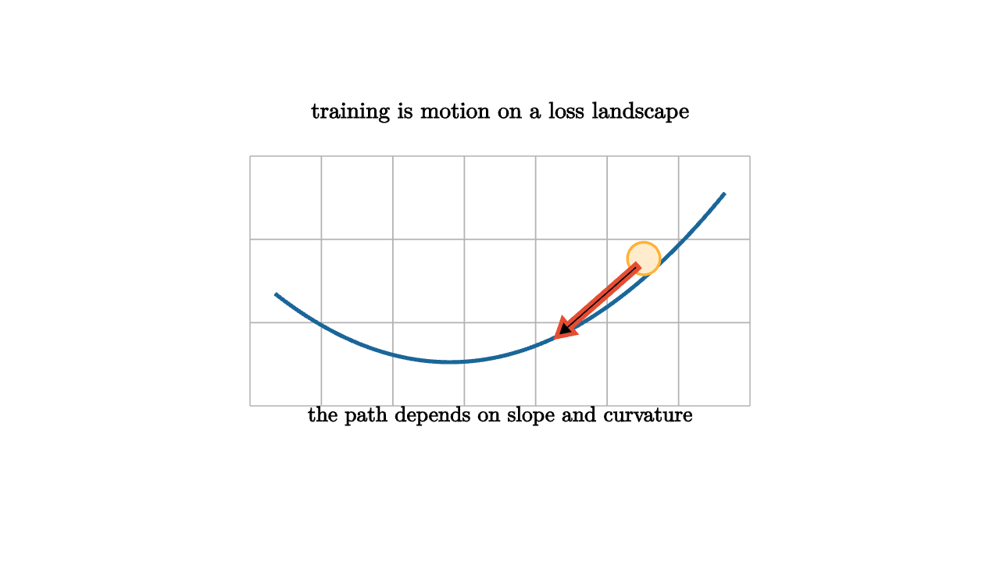

Every trained model has a hidden map underneath it. Each point on the map is a choice of parameters. The height above that point is the loss. Training is the act of moving through this landscape in search of lower ground.
For a parameter vector $\theta$, a typical supervised loss has the form
This single expression hides many shapes. Linear regression with squared loss gives a bowl. Logistic regression gives a smooth convex surface in many common settings. Neural networks create landscapes with valleys, ridges, plateaus, saddle points, and many parameter choices that represent almost the same function.

source
let soft = |col, amount| lerp(WHITE, col, amount)
mesh landscape = [
center{1.35u} Text("training is motion on a loss landscape", 0.66),
stroke{LIGHT_GRAY, 1} LineGrid([-2, 2, 8], [-1, 1, 4], 1),
stroke{BLUE, 3} ExplicitFunc(|x| 0.28 * (x + 0.4) * (x + 0.4) - 0.65, [-1.8, 1.8, 120]),
center{1.15r + 0.18u} fill{soft(ORANGE, 0.25)} stroke{ORANGE, 2} Circle(0.13),
stroke{RED, 3} Arrow(1.1r + 0.12u, 0.45r + 0.45d),
center{1.08d} Text("the path depends on slope and curvature", 0.62)
]A landscape story should mention curvature. In a narrow valley, loss changes rapidly in one direction and slowly along the valley floor. A step that is safe along the flat direction may overshoot across the steep direction. This is why optimization can zigzag. The gradient gives the downhill direction locally, while the Hessian describes how quickly that direction changes.
source
let samples = 24
let loss = |x, y| 0.55 * x * x + 0.12 * y * y + 0.08 * sin(4 * y)
let color_at = |pos, idx| keyframe_lerp([0 -> GREEN, 0.45 -> BLUE, 1 -> ORANGE], min(1, loss(pos[0], pos[1])))
"Wide View"
camera = Camera([3.0, -3.0, 2.1], [0, 0, 0], [0, 0, 1])
mesh surface =
stroke{BLACK, 0.8}
point_map{|p| [p[0], p[1], loss(p[0], p[1])]}
ColorGrid(color_at, [-1.4, 1.4, samples], [-1.1, 1.1, samples])
mesh title = center{1.35u} Text("height measures loss", 0.62)
play [Fade(0.8, [&surface]), Write(0.6, [&title])]
"Valley"
mesh path = stroke{RED, 3} Polyline([[1.15, -0.8, loss(1.15, -0.8) + 0.04], [0.75, -0.42, loss(0.75, -0.42) + 0.04], [0.35, -0.18, loss(0.35, -0.18) + 0.04], [0.1, -0.05, loss(0.1, -0.05) + 0.04]])
title = center{1.35u} Text("updates follow a curved valley", 0.62)
play [Write(1.0, [&path]), Trans(0.7, [&title])]
"Camera"
camera = Camera([2.2, -1.1, 1.2], [0, 0, 0.12], [0, 0, 1])
title = center{1.35u} Text("viewpoint reveals steep and flat directions", 0.62)
play [CameraLerp(&camera, 1.4), Trans(0.7, [&title])]Saddles are another important shape. In one direction a saddle slopes down, and in another it slopes up. High-dimensional landscapes have many saddle-like regions because there are many directions available. A point that looks flat along one slice can still have a useful escape direction in another slice.
Plateaus teach patience. If the gradient is tiny across a broad region, training makes slow progress even if a better region exists nearby. Neural network activations, saturated probabilities, and poor scaling can all create plateaus. A practical optimizer uses learning rates, momentum, normalization, and initialization to make the landscape easier to travel.
Modern machine learning also teaches a subtle lesson about minima. A model may have many parameter vectors with nearly identical training loss. Some minima are sharp, where a small parameter change increases loss quickly. Others are flatter, where nearby parameters perform similarly. Flatness often appears in discussions of generalization because a solution that survives small perturbations may reflect a more stable explanation.
The landscape is an analogy with equations behind it. It helps students connect the update rule to a picture, but the picture must be read carefully. In a model with millions of parameters, no one sees the full landscape. We see slices, projections, statistics, and training curves. Those views still matter. A loss curve that stalls, explodes, or oscillates is a shadow of the geometry the optimizer is trying to cross.